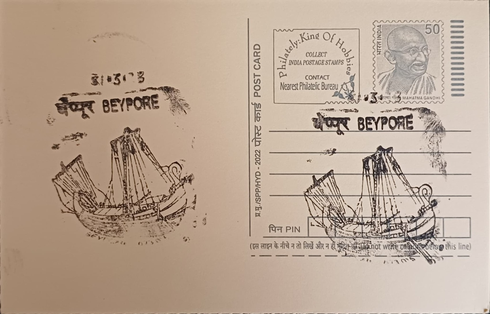

Uru or Fat Boat
ഉരു അഥവാ ഫാറ്റ് ബോട്ട്


The word uru, meaning simply "boat" or "ship" in old Malayalam, came to denote a particular class of large wooden sailing vessel built at Beypore, at the mouth of the Chaliyar river near Kozhikode, a craft locally nicknamed the "Fat Boat" for the broad, rounded belly of its hull. The tradition is bound up with Kozhikode's identity as a medieval emporium on the Indian Ocean spice route, where Arab merchants arriving to trade pepper and other goods found local Chaliyar-side yards already equipped to build and repair the dhows that carried that trade onward to the Persian Gulf and the Red Sea, a relationship that gave the uru its enduring association with Arabia rather than with any purely local naming legend.
As a craft tradition, the uru occupies an unusual place: it is at once a historical trade artefact, a living economic export, and a recognised strand of Kerala's maritime heritage, built not in enclosed factories but in open riverside yards where the hull takes shape in full public view. Its significance rests on its being one of the few places left in the world where large ocean-going wooden ships are still built without blueprints, metal fasteners, or power tools, the entire design existing only in the memory of a master craftsman who passes it to apprentices through direct instruction. The work is carried out by the Khalasi community, whose name derives from the Arabic for a dockyard worker or lascar, and whose association with Beypore's shipyards is said to extend back roughly two millennia alongside the port's trading history.
Construction begins with timber, historically Malabar teak felled in the Nilambur forests and today increasingly sourced as imported teak from Malaysia and elsewhere, selected and seasoned before being shaped entirely by hand with adzes, chisels and saws. Planks are fastened edge to edge with wooden dowels and coir yarn rather than nails, and seams are sealed with a traditional adhesive compounded from tree resins and fruit extracts to render the keel watertight; iron fastenings, where used at all, are kept to a minimum. A single vessel of substantial size can occupy a team of around fifty Khalasi craftsmen for anywhere from one to four years, and launching the completed hull into the river relies on an ingenious system of wooden rollers, rails and rope-and-pulley windlasses rather than any mechanised slipway, a method that has changed little since Khalasis first developed it to haul ships to and from the water.
A notable feature of the modern uru trade is the scale and prestige of its clientele: boats built at Beypore in recent decades have been commissioned not as working trade vessels but as luxury yachts, floating restaurants and ceremonial craft for buyers across the Gulf, including members of Qatar's royal family. One such Qatari commission, reported in the early 2020s, took close to ten months of labour and was valued at roughly four crore rupees, illustrating how a craft once built for merchant cargo runs has been repurposed, almost without altering its construction methods, into a bespoke luxury product for Middle Eastern patrons who prize the vessel's hand-built authenticity as much as its seaworthiness.
The industry passed through a difficult lean period in the late twentieth century as steel-hulled ships displaced wooden dhows in regional trade, and Beypore's yards survived largely by pivoting toward this export market for recreational and ceremonial vessels, a shift that has since drawn renewed government and tourism attention to the craft as an intangible heritage asset of Kozhikode district. The riverside yards remain open to visitors who come to watch hulls under construction, and the Beypore Uru tradition is now regularly cited in state tourism promotion alongside the town's older identity as a historic port. Shipbuilding at Beypore today continues chiefly as an export trade geared to Gulf buyers, with the same hand-built methods that once served Arab spice merchants now producing vessels destined for private harbours thousands of kilometres away.
| Date of Introduction | May 17, 2006 |
|---|---|
| Address | Sub Postmaster, |
| Beypore SO, | |
| Kozhikode (dt.), Kerala - 673015. |